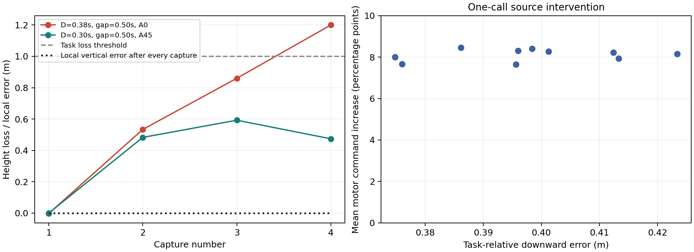

2026-10-28 · 既有 P5/P7/P8/P11 记录 · 本地计算 · 无新飞行、无 SITL、无 Thor
当前尚未证明新方法优势。新证据支持进一步核验“目标重置造成累计误差被反复清零”的机制。循环漂移方法仍需与完整信息灰箱、周期模板搜索和廉价漂移外推比较。
900次运行对应767个不同计划输入；125组重复输入共258次运行，其中7组出现任务成败翻转。以下是固定 ExtraTrees 模型的回顾性整类留出；测试集出现的重复输入从训练集删除。summary使用时长汇总，bag保留无序时长，ordered保留顺序。数值为准确率，未将此表解释为新方法收益。
| 接入层 | 留出类别 | 汇总 | 无序 | 顺序 |
|---|---|---|---|---|
| T0 | method | 78.0% | 79.1% | 77.3% |
| T0 | n | 79.8% | 77.1% | 79.1% |
| T0 | sector | 85.1% | 84.7% | 86.7% |
| T1 | method | 75.6% | 72.4% | 75.8% |
| T1 | n | 84.9% | 62.9% | 79.3% |
| T1 | sector | 88.0% | 86.9% | 84.2% |
P7的27条四次断流轨迹包含108次捕获，垂直位置误差在每次捕获后均精确归零。其中27次已经掉高超过0.5米，5次超过1米。11条轨迹超过高度损失门槛，其中10条全程最大倾角低于45°。

左图红线末两段增加0.326、0.340米，提示持续漂移结构；绿线在误差饱和后开始恢复，反驳“饱和就会持续漂移”。仅有相似峰值或相同事件顺序，不能证明动态状态已形成可重复循环。
右图来自P11的精确单次网络调用干预：保留同一实测物理状态、GRU与动作历史，仅将高度目标恢复为最后有效外部高度。10个已掉高超过10厘米的捕获点全部增加平均电机指令，平均8.11个百分点；原调用最大复现误差5.77×10⁻⁷。该结果证明指令因果效应，飞行后果尚未实测。
搜索能够重复出现、每轮都增加任务损失的事件循环。模型估计一轮后的动态状态与净损失；源码分析检查目标重置和观测截断何时使更多掉高不再改变控制器输入。只有循环状态闭合、截断分支持续有效、故障与路径预算允许时，才把一轮结果推广到重复次数这一整族地图。
理论候选是固定任务参考下，由重置和截断共同产生的单向平移不变性及其循环推广条件。Poincaré返回映射、相对周期轨道和局部收缩已有成熟研究，不能直接作为创新。精确条件命题及未解决条件见 候选方法与完成审计。
仅使用第三次捕获以前的数据，27条轨迹中有3条的第二轮外部高度误差全程处于向下饱和分支。这3条中，下一轮继续掉高的有2条，平均增量0.156米；直接按上一轮掉高排序取前三，3条全部继续掉高，平均增量0.325米。该检查说明饱和条件单独使用没有改善选择。它假设所有前缀已经可用，属于回顾性的续接选择压力检查，不能当作总飞行预算比较，也没有评估尚未实现的完整循环闭合算法。逐条结果
混合系统对称性抽象已经研究守卫、重置与可达集的变换复用；混合变换循环加速已经研究重复控制循环的无界效应。当前候选与这些工作直接相关。移动轨迹还要求外部参考路径及全部时钟在相应变换下闭合，这些条件尚未得到现有导出数据支持。当前保留机制发现，尚未获得独立理论或算法优势。
四次捕获只提供三段完整循环；P7导出缺少完整姿态、角速度、GRU、执行器与时钟缓存，无法验证完整状态复现。用第二段增量线性推算第四次捕获的误差仍为11.23厘米，尚未胜过强灰箱。切换和第二平台的优势没有证据，固定捕获修复C在P9已有9/9成功也必须保留为基线。